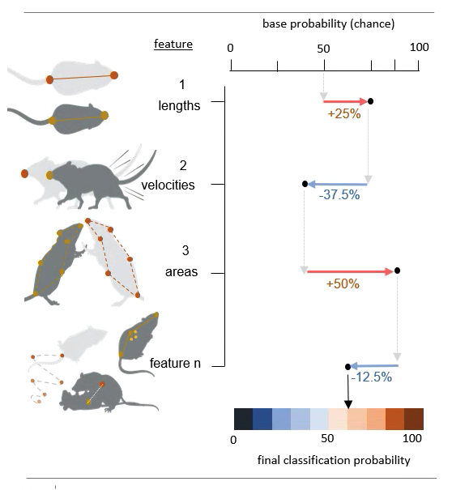

Model explainability and calculating feature SHAP values in SimBA

An understanding of how machine learning models reach their decisions is important not only for the scientific method but can also help you gain insight into how your classifier works and what makes it different or similar to other classifiers. Machine learning explainability metrics, such as SHAP, can help you answer questions like:
Why does my classifier think some specific frames contain my behavior of interest, while other frames do not?
Why does the classifier generated by annotator X classify events so differently (or similarly) to the classifier generated by annotator Y?
Why does my tracking model think the location of the nose of the animal is located in this particlar part of the image?
Which, of several classifiers, classify the target events by using the same behavioural features that a human observers would use to classify the same events?
Are there any potential differences in the features that annotator X and annotator Y look at when annotating videos for the presence or absence of the same target behavior?
Explainability metrics can be very important, as it is possible that the classifiers you are using appear to look for the same behavioral target behaviours and features as a human observer would, while the classifier in fact looks as something very different from the human observer. Such weaknesses are typically revealed when analyzing new videos in new recording environments, that were not included in the data used to train the classifier, and explainability metrics can help you avoid such pitfalls. For a discussion of the role of explainability in machine learning and behavioural neuroscience, see Goodwin, Nilsson et al., Current Opinion in Neurobiology Volume 73, April 2022 as well as THIS SLIDE DECK.
Here we look at how we can use SHAP (SHapley Additive exPlanations) within SimBA to calculate how much each feature contributes to the final behavioral classification score for each annotated video frame. Through this method we will get an verbalizable explanation for the classification probability score for each frame, such as:
Frame N in Video X was classified as containing my behavior of interest, mainly because of the distance between animal A and B, but also because the movements of animal A. In frame N, the larger movements of the animals increased the behavior classification probability with 20%, and the distance between the animals increased the classification probability with a further 70%.
In brief, when using SHAP, each feature is evaluated independently, and the final classification probability is distributed among the individual features according to their contribution to it. This value is calculated after exhaustive permutations within the order of feature-introductions into the classification scenario:
{kind=link}
The base probability in the figure above is the probability of picking a frame that contains your behavior by pure chance (e.g., if half of your video frames contain you behavior of interest, then the base probability will be 50%; more info below!). The values associated with each feature describe the features effect on the classification probability. To read more about SHAP values, also see the SHAP GitHub repository which SimBA wraps, or read SHAP paper in Nature Machine Learning Intelligence.
The goal if this analysis may be to produce data and visualisations similar to the image below, which compares classifiers for the same target behavior (attack behaviour, in this example) but built using annotations from different recording environment, annotators and institutes. With this type of data at hand, we would be able to conclude that most attack classifiers primarily depend on features of intruder movement, animal distances, and resident and intruder movements, for discriminating attack events from non-attack events (with some notable exceptions!).

Part 1: Generate a dataset
SimBA calculates SHAP values for the classifier at the same time as the model is being trained. Thus, before analysing SHAP scores, we need a dataset that contains behavioral annotations. You will need complete the steps detailed in the Scenario 1 tutorial Part 1 Step 1 up to Part 2 Step 6. That is, you will need to complete everything from Creating a project up to, and including labelling behavioral events.
Note
If you already have annotations generated elsewhere (e.g.,
downloaded from the SimBA OSF repository,
you may not have to go through Part 1 Step 1 to Part 2 Step 6
as detailed above. When calculating the SHAP values, SimBA will loook
inside your project_folder/csv/targets_inserted subdirectory for
files containing the annotations (just as SimBA does when generating
the classifier). So to calculate SHAP values, SimBA needs this folder
to be populated with files containing behavioral annotations.
Part 2: Compute SHAP scores
Step 1: Define SHAP settings
Navigate to the Train machine model tab and click on Settings.
In the pop-up window, fill out your model hyperparameter settings as
described [HERE]
(https://github.com/sgoldenlab/simba/blob/master/docs/Scenario1.md#step-7-train-machine-model.
At the bottom of the Settings pop-up window, you will see these
entry boxes. Begin by ticking the Calculate SHAP values entry box.

When this box is ticked, and the entry boxes are filled in, SiMBA will
also calculate SHAP values while generating your behavioral classifier.
SimBA will use your annotations in the
project_folder/csv/targets_inserted folder when doing so. SHAP
calculations are an computationally expensive process, so you most
likely can’t use all of your annotations to calculate them. The time
it takes to calculate SHAP scores for a single frame will depend on how
many features you have the the specs of your computer, but in all
likelihood it will take several seconds, and possibly tens of
seconds, for a single frame. We therefore have to select a random
sub-set of frames to calculate SHAP scores for.
In the
# target presententry box, enter the number of frames (integer - e.g.,200) with the behavioral target present to calculate SHAP values for.In the
# target absententry box, enter the number of frames (integer - e.g.,200) with the behavioral target absent to calculate SHAP values for.
Once you have filled in the SHAP entry boxes, click on either
save settings into global environment or
save settings for specific model, depening on wether you are
generating one model, or several models at once. For more information on
generating one vs several models, click
HERE.
Click to close the Settings pop-up window.
Step 2: Train the classifier and generate SHAP values.
Start the classifier training by clicking on
Train single model from global environment or
Train multiple models, one for each saved settings. You will be able
to follow the progress in the Terminal window. A new message will be
printed in the main SimBA terminal for every SHAP score computed. If you
are calculating the shap scores for 200 frames, you can expect the
beginning of the calculations to look something like this in the main
SimBA terminal:

Note
As noted above, calculating SHAP scores is computationally
expensive and depending on the number of frames you entered in the
# target present and # target absent, this could take a
while. If you are calculating SHAP scores for a lot of frames, it’s
best to make it an overnighter.
Once complete, you will see the following message:
All SHAP data saved in project_folder/models/evaluations directory.
Navigate to the directory to access your SHAP values. In this directory
you will see several output files. If you used one of the SimBA
pre-defined 14- or 16-body-part
configurations,
and your classifier is called copulation you will see 5 new files
named something like this:
RAW_SHAP_feature_values_copulation_prediction.csvSHAP_values_copulation_prediction.csvSHAP_summary_copulation_ABSENT_20210507160801.csv(only saved when using 14- or 16-body-part configurations)SHAP_summary_copulation_PRSESENT_20210507160801.csv(only saved when using 14- or 16-body-part configurations)SHAP_summary_line_graph_copulation_20210507160801.png(only saved when using 14- or 16-body-part configurations)
Below we will go through how the data in these two files can be interpreted.
Step 3: Interpreting the SHAP value ouput generated by SimBA.
Detailed SHAP values
The first two SHAP value output files
(RAW_SHAP_feature_values_copulation_prediction.csv &
SHAP_values_copulation_prediction.csv) have an equal number of rows,
where every row represent one of the frames that we calculated SHAP
scores for. If you chose to generate SHAP values for 200 frames, each of
the two files will contain 200 rows, where row N within both files
represent the data for the same frame. The first file
(SHAP_values_copulation_prediction.csv) contains the SHAP
probability values. The second file
(RAW_SHAP_feature_values_copulation_prediction.csv) contain the
raw feature values for the same frames. The reason for generating
two files is that it is sometimes necessery to match the SHAP values
(represented in the SHAP_values_copulation_prediction.csv) with an
actual feature values (represented in the
RAW_SHAP_feature_values_copulation_prediction.csv).

To help understand this, I’ve placed the two CSV files next to each
other in the image above, with the RAW feature values file shown on
the left, and the SHAP values file on the right. The red rectangle
in the RAW values, on the left, shows that raw feature distance between
the nose and the tail of animal number 1 (the feature name is in the
header) was 70.23404 millimeters in frame number 1. Conversely, the SHAP
values, shown on the right, shows that the distance between the nose and
the tail of animal number 1 increased the copulation probability in
frame number 1 with 0.317%.
The last four columns of the SHAP_values_copulation_prediction.csv
file contain some information that might be helpful for interpretating
the data, and give a sanity check that the calculations were done as
expected:
{kind=link}
The first of these 4 columns (Expected_value), contains the baseline
probability value. That is - in this toy example - if you picked a frame
at random, there is a 7.693% chance that the frame contains the target
behavior copulation.
The second column (Sum) contains the sum of all of the SHAP values
for each individual frame. The third column (Prediction_probability)
is the classifiers probability for the presence of the behavior in each
individual frame. These two columns are generated as a sanity check,
because the final prediction probability seen in the
``Prediction_probability`` column should equal the sum of all the SHAP
values seen in the ``Sum`` column. If the values in these two columns
are not identical, then something has gone astray.
Summary SHAP statistics
Three further SHAP output files are generated if you are using the
SimBA pre-defined 14- or 16-body-part
configurations.
The first two of these files
(SHAP_summary_copulation_ABSENT_20210507160801.csv and
SHAP_summary_copulation_PRSESENT_20210507160801.csv) details the sum
of SHAP values in several defined feature categories. Here, we collapse
all the features extracted by SimBA into seven feature categories that
measure general characteristics of the social interaction (i.e., animal
distances, resident and intruder movement, intruder movement, resident
movement, resident shape, intruder shape, and resident and intruder
shape). We then divided each of the seven feature categories into six
further sub-categories that represent features within the category with
different frame sampling frequencies (133ms, 166ms, 200ms, 500ms, 66ms,
1 frame). If we open the two files
(SHAP_summary_copulation_ABSENT_20210507160801.csv and
SHAP_summary_copulation_PRSESENT_20210507160801.csv) they look
something like this:

The top screengrab tells you that the most important feature category for detecting copulation events was features measuring the combined movement of both the animals, and the most important feature time-sampling window within this category was 200ms. The bottom screengrab tells you that the most important features for detecting non-copulation events. To see which features form part of each of the sub-categories, check out THIS CSV file.
The final file
(SHAP_summary_line_graph_copulation_20210507160801.png) is an image
that summarizes the summed SHAP scores for a quick overview of the
decision processes of your classifier. It is a visual representation of
the summed SHAP values seen in the
SHAP_summary_copulation_PRSESENT_20210507160801.csv file and look
something like this:

Check in with us on the Gitter chat
channel or raise a an
issue and we may be able to help. The fourth column
(copulation_prediction) will read either 0 or 1, and tell you if
this particular frame was annotated as containing the behavior of
interest (1), or not containing the behavior of interest
(0).